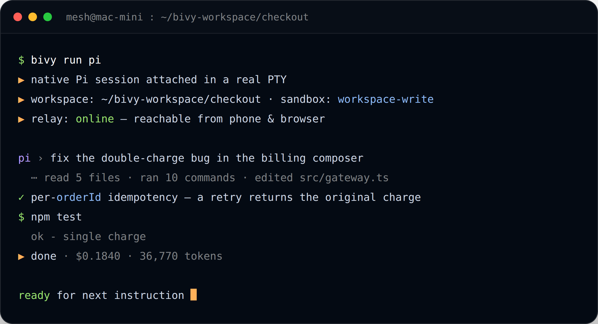
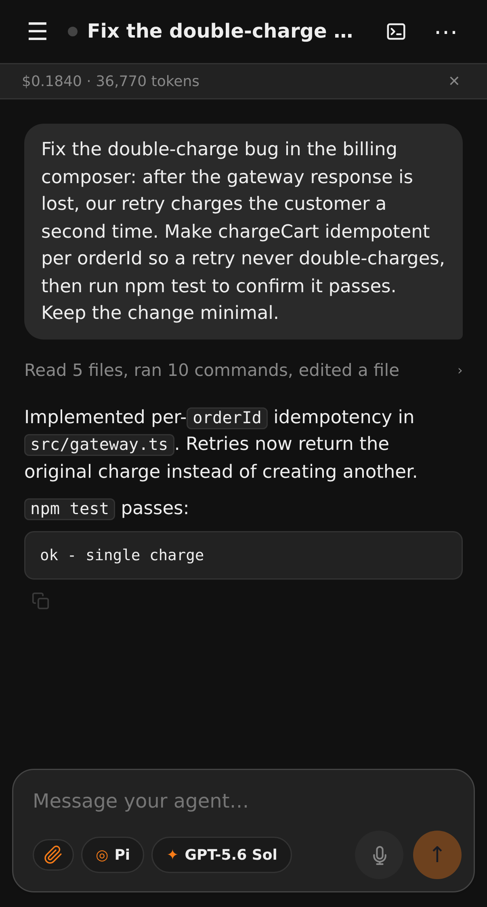

Run coding agents on machines you own.
Bivy runs Claude Code, Codex, Gemini CLI, Aider and other agent CLIs on your own laptop or server — with your keys, your repo, and your toolchain — then puts every session in an app on your phone: the full transcript, the diffs, a real terminal, and the approval it's waiting on.
$ curl -fsSL https://bivy.sh/install.sh | bash
macOS and Linux. Needs Node 22.19 or newer, and the installer sets that up for you if it's missing. Want to read it first? View the script.
Your code never leaves your machine — agents run in real terminals on hardware you control, and Bivy adds the session layer, approvals, and remote access around them. Free, 10 runs a week, forever: no credit card, no trial clock. Setup is one command and a guided wizard, and uninstall is one command too.
Runs Pi, Claude Code, Codex, OpenCode, Gemini CLI, Qwen Code, Goose, Aider, Cline, Crush — or any CLI you point it at.

What's in 0.1
The session layer around agents you already use.
Bivy does not replace agent CLIs. It runs them in real PTYs and adds what they individually lack: durability, remote access, approvals, and a consistent way to move between them.
Any local agent
Ten agents supported today — and anything else you point it at
Pi, Claude Code, Codex, OpenCode, Gemini CLI, Qwen Code, Goose, Aider, Cline
and Crush, each driven through its native CLI. Bivy installs the ones you pick.
Any other command works via bivy run -- ./your-agent.
Durable, movable sessions
Sessions that survive — and fork to any node
Every session has a durable append-only event log and its own git worktree, so detaching your terminal or restarting the daemon never loses it. Fork a running session onto a different agent, a different model, or a different machine, carrying the transcript and any uncommitted work with it.
Keys, synced
Credentials synced across every node, end to end
An encrypted local vault, plus env:// and op://
(1Password) references resolved at start. Bivy-managed provider credentials sync
end-to-end across every node you own — add a key once. Agent-native CLI logins
(Claude Code, Codex, Gemini CLI) may need a one-time sign-in per node.
Also included
No ports, no tunnel, no VPN
Your node dials out to the relay, so nothing listens for inbound connections and there's no firewall rule to add. It works behind NAT, hotel Wi-Fi and corporate networks the same way. See what the app gives you →
Push notifications
Get pinged when an agent finishes, needs an approval, or hits an error, so you can kick something off and walk away instead of babysitting the terminal.
Approvals wherever you are
Agents run unattended by default. Catastrophic commands and writes outside
the workspace are blocked in every mode, and force-push, publish, deploy and
sudo always pause. Switch to risky or always to be
asked about more, and approve from terminal, browser, or phone.
GitHub issue to pull request
Label an issue bivy, or mention the Bivy GitHub App in a comment.
A machine you own clones the repo, works in an isolated worktree, and opens the
pull request itself.
Terminal takeover
bivy shim install claude makes typing claude start
the real TUI inside a Bivy PTY — so an ordinary terminal session becomes one you
can pick up from your phone.
Any model endpoint
Thirteen providers by API key or OAuth, plus your own OpenAI-compatible, Azure, Ollama, LM Studio, vLLM or SGLang endpoints.
Runs on any machine you own
A laptop, a home server, a Raspberry Pi, or a VPS, droplet or EC2 instance you already pay for — if you can install it there, Bivy runs there. Connect as many machines as you like, on every plan.
The app
Any agent, any model — a real chat client, not a terminal crammed onto a phone.
This is the mobile companion most agent CLIs don't ship on their own: whichever agent and model you're running — Claude Code, Codex, or nine others — on machines you own, with your own keys, reachable from anywhere. A composer built for chatting with an agent, with dictation and attachments, not a PTY squeezed onto a small screen — plus the same label-an-issue, get-a-pull-request-back workflow other agents lock to their own hosted compute. See the GitHub work queue below.

-
Pick up any session, on any machine
One list across every node you own. A session you started with
bivy runin a terminal is the same session here — open it and keep going. - Type it, paste it, or say it A real composer, not a terminal squeezed onto a small screen. Dictate a prompt instead of thumb-typing it, attach a screenshot straight from your camera roll, and use the agent's own slash commands with autocomplete. A half-written message survives a reload or a jump to another session.
- Only in Bivy Change agent, model, or machine mid-run Swap Claude Code for Codex, move to a bigger model, or fork the whole session onto another node — transcript and uncommitted work included.
- See the work, not a summary Every tool call, command, and file edit, with the diff attached. Expand "read 5 files, ran 10 commands" to check exactly what it touched before you trust it.
- Undo a turn you don't like Bivy takes a git checkpoint around every turn, for every agent. Undo the last one from your phone, or scrub back through the timeline and rewind to any earlier point — so letting an agent run isn't a one-way door.
- Approve from wherever you are Force-push, publish, deploy and sudo always pause for a human, and you can ask to be consulted on far more. When an agent stops — or just asks you a question — it shows up in the app with the command, the risk, and the raw tool input, and one tap unblocks it instead of a run sitting idle until you're back at your desk.
-
Drop into a real terminal, when you need one
A full PTY on the machine, in your pocket — run the tests yourself, check
git status, or take over when the agent gets stuck. With a touch key bar for esc, tab, ctrl and arrows, so a phone keyboard stops being the reason you wait until you're home. It can attach to an existing tmux, zellij or screen session too. - Know what it's costing A live token and dollar counter on every session, so a long autonomous run never surprises you.
- Installs like an app Add it to your home screen from the browser — no app store, no download, no review queue. It launches full-screen, paints your recent sessions from cache before the network answers, and never force-reloads you mid-session. Push notifications come find you when a run finishes or stalls, so you don't have to keep the tab open.
Nothing to set up separately. The app is part of the free plan. There's
no download — bivy setup walks you through remote access and prints a
QR code, and scanning it pairs your phone; bivy link prints a fresh
one any time. Pairing is an encrypted handshake with your own node, so the app
streams your session without the relay or our servers being able to read it.
How it works
Three parts, and only one of them holds your data.
The node is a small daemon on your machine. It owns the workspace,
the credentials, and the agent processes, and it serves an API on
localhost:4317. It holds no account and hosts no web page.
The relay forwards encrypted frames between your node and your devices. Your node dials out to it, so you never open an inbound port. The relay routes ciphertext it cannot read.
The control plane holds your account, the list of your nodes, and serves the web app. It coordinates metadata and routing. Use ours, or run your own.
# your machine hosted or self-hosted # # ┌──────────────┐ ┌─────────┐ ┌───────────────┐ # │ node daemon │ ──dials──▶ │ relay │ ◀────▶ │ control plane │ # │ agents, keys │ outbound │ opaque │ │ accounts, web │ # │ repo, tools │ │ frames │ │ app, metadata │ # └──────────────┘ └─────────┘ └───────────────┘ # ▲ ▲ # └────────── end-to-end encrypted session ───────────┘ # phone · browser · another terminal
What this buys you. No repository upload, no vendor sandbox, no token markup, and no inbound firewall rule. What it costs you: you operate the machine the agent runs on.
Pricing
We charge for the remote layer, never for your tokens.
Free
The whole product. One limit: 10 runs a week.
- Any local agent — 10 supported, plus your own
- Durable sessions and worktrees
- Approvals and sandbox tiers
- Unlimited relay-connected nodes
- Push notifications
- Cross-node session index
- 10 runs / week — any source (manual, app, GitHub)
- The full phone and browser app
- Community support
Pro
For when bivy is part of your day — uncapped, plus a human to email.
- Any local agent — 10 supported, plus your own
- Durable sessions and worktrees
- Approvals and sandbox tiers
- Unlimited relay-connected nodes
- Push notifications
- Cross-node session index
- Unlimited runs — no weekly cap
- The full phone and browser app
- Email support
Community support means public GitHub issues, with no guaranteed response. Self-hosting is unsupported — community best-effort only — but a control plane you run yourself has no run limit at all.
GitHub work queue
Label an issue. Get a pull request back.
Work happens on a machine you own, with your local toolchain and your credentials. Bivy's control plane sees the issue title, body, and routing label — never your repository contents.
-
Trigger it in GitHub
Add the
bivylabel to route to your default node, orbivy/mac-minito target one. Or mention the Bivy GitHub App in a comment. - Bivy queues the work A signed webhook reaches the control plane, which verifies it and records a work item. Redeliveries are de-duplicated.
- Your node claims it Claiming is atomic, so only one machine runs a given issue. The node comments on the issue naming itself, so you can see work has started.
-
The agent opens the PR
It works in a
bivy/issue-<n>worktree, runs your tests, pushes a branch, and opens the pull request. Review it from your phone.
The GitHub work queue is free — it draws from your 10 runs a week, shared with every other source. Go Pro — $15/mo for unlimited runs.
Security
What each part can see.
"Is it secure?" is the wrong question. The one that matters is what each part can actually read. Here's the whole table, nothing hidden.
| Data | Your node | Relay | Control plane |
|---|---|---|---|
| Repository contents | Yes | No | No |
| Prompts and transcripts | Yes | No | No |
| Model API keys | Yes | No | No |
| GitHub repository tokens | Yes | No | No |
| Cloud provider tokens | No | No | No — device-local |
| Session frames in transit | Plaintext | Ciphertext only | Ciphertext only |
| Account, node list, session index | Yes | No | Yes |
| GitHub issue title and body | Yes | No | Until claimed |
| Push notification text | Yes | No | Yes |
Known limits.
Sandbox tiers — read-only, workspace-write,
danger-full-access — are enforced natively by the agents that
support them (Codex, Claude Code, Gemini CLI, Qwen Code). Agents without a native
sandbox are governed at the filesystem, MCP, and network layer, not by an OS jail.
Bivy does not ship its own OS-level jail in 0.1.
Queued GitHub issue titles and bodies are stored in plaintext by the control plane until a node claims them.
Push notification titles and bodies pass through the control plane in plaintext, and can contain session and terminal names. Everything else in a session stays encrypted end to end.
Credential sync between your own nodes covers Bivy-managed provider keys. Agent-native logins — Claude Code, Codex, Gemini CLI — remain per-machine.
The default approval mode is autonomous: agents act without
per-action prompts. The hard floor still applies in every mode — catastrophic
commands and writes outside the workspace are refused, and force-push, publish,
deploy and sudo pause for a human. Set
BIVY_APPROVAL_MODE=risky if you want to be asked about every
shell command and file edit.
Bivy is 0.x software. Interfaces and behaviour can change between releases.
Read the full security model, including device pairing, key handling, and revocation.
Source available
Yours to read, fork, and self-host.
Bivy Core — the node daemon, CLI, runtime adapters, web client, relay, and the baseline control plane — is published under the Functional Source License (FSL-1.1-ALv2). You may use, modify, and self-host it for any purpose except offering a competing service. Each release becomes Apache-2.0 two years after it ships.
Remote access is not locked to us. Point the node at your own relay and control plane and nothing about the product changes.
# install and run the guided setup $ curl -fsSL https://bivy.sh/install.sh | bash # run any agent as a durable, reachable session $ bivy run codex $ bivy run aider $ bivy run -- ./my-agent # pick a sandbox tier $ BIVY_SANDBOX=read-only bivy restart # list and resume from anywhere $ bivy sessions $ bivy resume # point at your own infrastructure $ bivy relay:setup --relay wss://relay.example.com \ --control-plane https://bivy.example.com
Self-hosting is unsupported. No SLA, community best-effort through GitHub issues. The node and CLI run locally with no server stack. Self-hosting the relay and control plane means you operate that stack — TLS, backups, upgrades, hardening — yourself.
Documentation
Start here.
Getting started
Reference
Remote & integrations
Operating it
FAQ
Does my code ever leave my machine?
No. Agents run in real terminals on the node you control. The relay forwards encrypted frames it cannot read. The control plane holds your account, your node list, and a session index — not your files, prompts, transcripts, or keys. The one exception is stated above: a queued GitHub issue's title and body sit in the control plane until a node claims it.
What counts as a run?
A run is one agent session you start — from the CLI, the phone or browser app, or a labeled GitHub issue. All three sources draw from the same count: 10 per rolling seven days on the free plan (a moving window, not a fixed calendar week), and unlimited on Pro. Self-host the control plane and there's no run limit at all.
What do I actually need to get started?
A Mac or Linux machine you can leave running, and a login for whichever model
you want to use. Node 22.19+ is required and the installer sets it up if it's
missing. bivy setup then walks you through the rest — workspace,
model sign-in, remote access, and a background service so it comes back after a
reboot. It's free, 10 runs a week, there's no credit card, and
bivy uninstall removes the service and config if you decide against
it.
Is the phone app in the App Store?
No, and it doesn't need to be. It's an installable web app: open your control plane URL and add it to your home screen — on iPhone that's Safari's Share → Add to Home Screen, and on Android or desktop it's the browser's own install button. After that it launches full-screen like any other app. Nothing to download, and updates arrive without a store review.
Do I need to open a port or run a tunnel?
No. Your node makes an outbound connection to the relay, and your devices attach through it. This works behind NAT and corporate firewalls without any inbound rule.
Why doesn't the node serve a web page?
Deliberate separation. The node is a data plane: it exposes an API and a
WebSocket on localhost:4317 and nothing else. The browser and phone
app are served by a control plane — ours, or one you run. This keeps the attack
surface on your machine small and the trust boundary explicit.
Which agents are supported, and how well?
Ten are in the picker. Pi and Claude Code are the most complete. Codex, OpenCode, Gemini CLI and Qwen Code are solid. Aider, Cline and Crush work but have gaps inherited from upstream — Aider and Crush cannot resume a session, for instance. The support matrix lists exactly what each one can do.
Do you mark up model tokens?
No, and we do not resell inference. You bring your own provider keys or subscription logins and they stay on your node. Paid plans cover hosted relay, remote access, push notifications, and the GitHub queue.
Can I self-host all of it?
Yes — node, relay, and control plane are all in the repository, and the CLI takes flags to point at them. It is unsupported: no SLA, community best-effort. You own TLS, backups, upgrades, and hardening.
What does "source available" mean here?
The Functional Source License lets you use, modify, and self-host the code for any purpose except offering a competing commercial service. Two years after each release, that version converts to Apache-2.0. It is not an OSI-approved open source licence, and we do not describe it as one.
How stable is 0.1?
It is the first public release of 0.x software. The core loop — run an agent, keep the session, reach it remotely, approve actions — is solid and used daily. Newer surfaces such as credential sync between nodes are rougher. Interfaces can change between releases.
Real agents, on a real machine you own.
One command to install, and free, 10 runs a week with your phone included. Nothing to configure on your network, no credit card, and no repository to hand over. Go Pro later if you outgrow 10 runs a week.
$ curl -fsSL https://bivy.sh/install.sh | bash